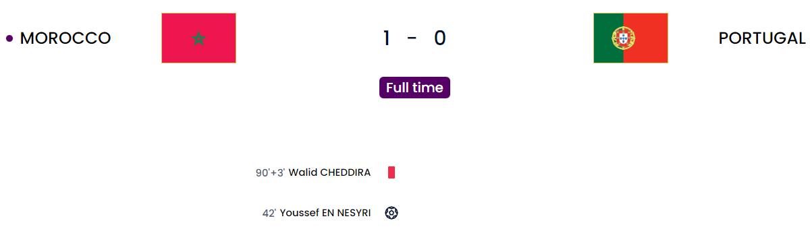
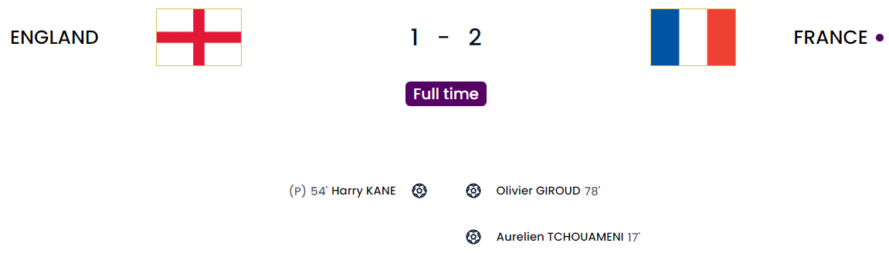
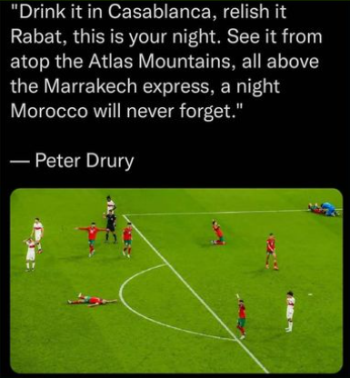
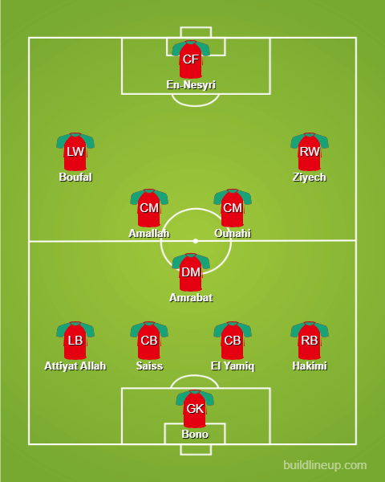
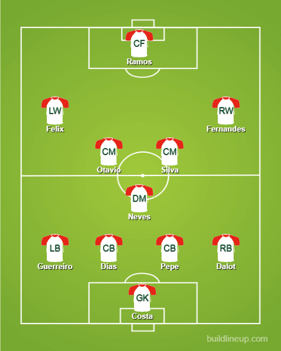
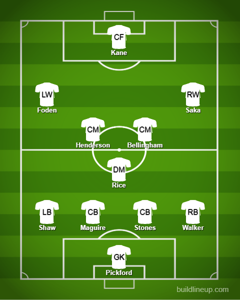
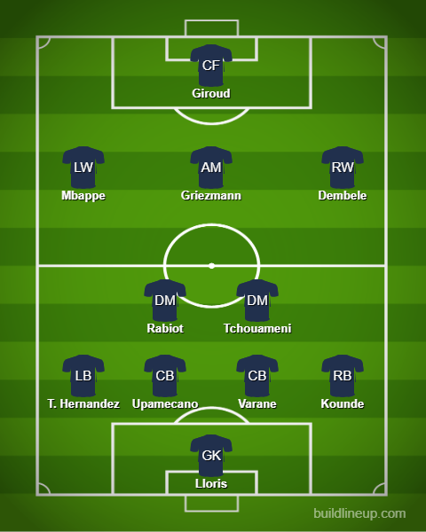
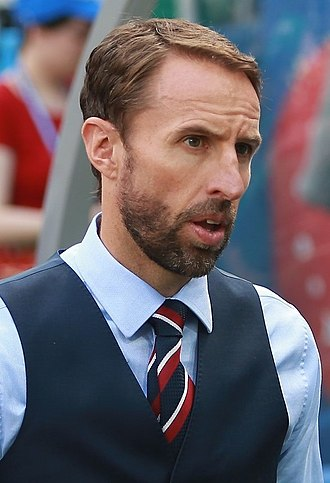
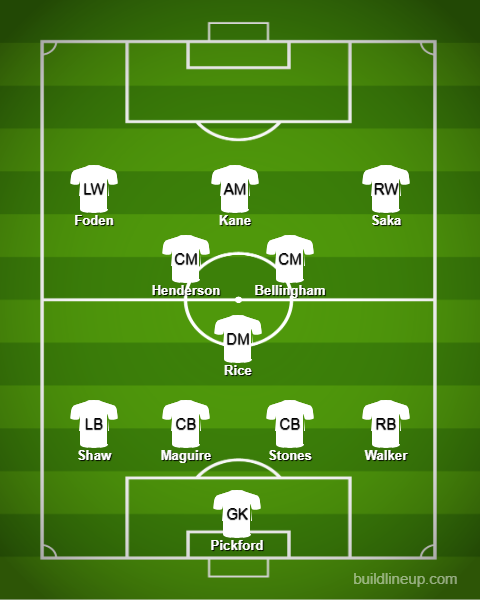
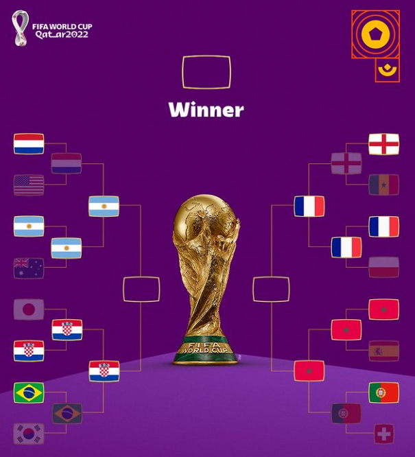

Day 21
Morocco v Portugal and England v France


2 games that were actually settled in normal time. Surprisingly normal 😅. One was decided by a major error by the keeper otherwise it would have gone to penalties yet again. The second game was just well managed by France because England hardly had any open play chances and the one chance they had to equalize the second time Kane managed to bottle it. The second semi-final is now Morocco v France. The major matchup there is definitely going to be Hakimi v Mbappe but injuries to their backline are going to be hampering them.
Match 1
Major Costa error costs Portugal. Being pragmatic wins you games: This World Cup in a nutshell. Morocco history makers.
Morocco have become the first African nation to get into the semi-finals of the World Cup. A huge huge achievement from them and it was finished in normal time instead of penalties because of one Diogo Costa error. In the knockouts doing an error that big is inexcusable. The cross comes in and Costa massively misjudges the cross leaving En-Nesyri with an open net giving Morocco the lead. After that, it was chance after chance from Portugal. There didn’t seem to be enough that were clear-cut chances. Ramos was isolated and hardly could do much(Ronaldo would have been criticized for that 😂 and yes he was benched again along with Cancelo). Felix had 1 chance but it was heavily deflected. He was rather decent actually with the second being a great setup and his left-footed shot was saved well by Bono. Later on, seeing the talent come on with the likes of Leao, Ronaldo, Cancelo and so on, Morocco moved to their trusty 5 at the back formation which had to happen after Romain Saiss their captain couldn’t continue further. Portugal tried everything. Chance after chance came and the passes were just misplaced due to the anxiety. And finally, it signaled the end of the road for Portugal. A vastly talented team with experience and youth but have been felled by what is Africa’s best team currently. It may also appear to be the end of the road for Cristiano Ronaldo at least in his international career which is just annoying. The smallest of errors lead to this and it is gut-wrenching in general to see this happen. This is one trophy and medal that will forever elude him in what has been an illustrious career. Morocco is on par with Croatia with their resilience for sure. They will not be shaken. In terms of attack, they had to be penned back due to Portugal constantly applying pressure but they managed to hold on. Saiss had a warriors performance despite his leg being heavily bandaged but had to come off eventually. Bono was a rock as always. One stupid moment was the substitute ST who came on. He got a yellow card for a bad challenge and immediately went and made another one and got himself sent off. Hakimi managed to hold on with Leao but Ziyech eventually had to track back and help. In terms of injuries, Saiss and Aguerd are out and so is Ziyech after he had to come off as well. As a certain Mr. Peter Drury put it:

Morocco

Portugal

Match 2
ENGLAND’S GOING HOME. ENGLAND’S GOING HOME. ENGLAND’S GOING HOME. 🤣🤣🤣🤣🤣🤣🤣🤣🤣👋👋👋👋👋👋👋👋👋
For the first time since I think 1990 the defending champion and runner-up of the previous World Cup have made it into the semi-final of the World Cup now. This was a pretty decent performance from France apart from some shaky moments. England went with the wrong system and the wrong mentality. I strictly said if England doesn’t push from the get-go they can get overrun and they did. The beginning stage was all France and the breakthrough came from Tchouameni with a great strike after a little space opened up. It went through Bellingham’s legs and past an outstretched Pickford(Maybe a taller keeper like an in-form Ramsdale could have made a difference but he isn’t part of the FaVoRiTeS 🙄 because it was saveable being towards the bottom corner). Once France scored, there was a momentum shift as England remembered to suddenly play because they went a goal down and they were pushing but there was not any open play chance created from them throughout the game even if they had the momentum from scoring the penalty. Yes in the second half a penalty was given when Saka(England’s best player by a landslide and he gets subbed off 🤦) was fouled in the box and Kane stepped up to score it past his club teammate. With that goal, he has drawn level with Wayne Rooney as England’s all-time leading goal scorer. After that France managed to have it handled well because of a lack of a CAM like how Griezmann is for France Kane dropped back way too deep and Southgate didn’t trust the likes of Rashford, Maddison and so on to make the difference which it could have. England did have a second penalty but France did give a response back. Giroud missed a great chance from the cross and only put his effort close to Pickford who made a straighforward save and managed to score after a corner after said chance with the cross coming in from Griezmann and his header being on point as always. The second penalty for England was given after a VAR review when Mount was barged off by Theo Hernandez. It was a brain fart from the latter. But Kane could not bring them back in a second time as his shot sailed well over the bar. Since Theo did an NFL-style challenge on Mount, Kane decided to show his NFL side by blasting it home for the bonus point 🤣. Unfortunately, this is not the NFL Harry 🤣🤣🤣🤣. Everyone knows this ball is light. Why you went for it like that I will never know. After this England just didn’t have an answer after that.
🎵They’re going home
They’re going home
They’re going…
England’s going home🎵🤣👋
England

France

Gareth Southgate

Bonjour Monsieur Boregate 🤣. The first major test and you have fallen. The World Cup was supposed to begin in the quarter-finals for yall and well I see that you have immediately gone 😂. From the start, the mentality and the system were all wrong. Given the talent is equal between England and France it would have been better to just replicate the same system as France. Griezmann had so much space and was really influential despite you having 3 midfielders 🤦. Kane dropped deep because the midfield couldn’t quite get the ball to him. When he did, there was no one in the box to aim at for the wingers and even if the wingers did cut inside they would be easily stopped by the defense and they had no one to also feed in because Kane would be all the way at the halfway line 🙄. The pace was needed and Kane is NEVER EVER going to provide that. Saka was your best player and you bring on Sterling who went through a damn burglary and had to go back to England and come back in. The favoritism has to stop mate. Rashford was in great form and he does not bring him in. I think an in-form Maddison would have made a better difference than Mount in all honesty. From the damn FaVoRiTeS gang to the bad squad choices and stubbornness, you have proved time and time again that you are not the right man to lead this great generation of talent. Misusing the likes of Foden(Pep gets the best out of him week in and week out), Rashford(EtH has got the best out of him and is in great form), Maddison(No minutes whatsoever which is just plain sad). You missed a CAM today and that cost you badly. You only started attacking after Tchouameni’s great strike. Just having a happy team is not enough FYI. You actually have to have a decent game plan of attack. Without a CAM, what were you even thinking? Why in the world were you relying on Kane who is a bloody STRIKER BTW for your linkup? It made defending a piece of cake for Varane and Upamecano. This was how you were playing:

The wingers looking up couldn’t see their target man ST which was absolutely hilarious to watch 🤣🤣🤣🤣🤣🤣🤣🤣🤣🤣🤣🤣
So with the utmost respect(which is virtually not much), I am saying to you and your bunch of FaVoRiTeS:

THE FINAL FOUR
